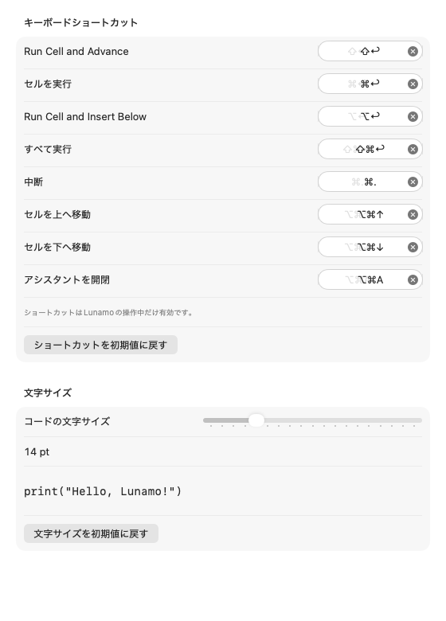

Lunamo
SwiftUIでつくったPythonノートエディタ。
Macでmarimoのノートを編集・実行できます。
Apple Silicon · macOS 26以降

エディタ設定
⌘ Return でセルを実行、Shift Return で次のセルに進みます。キーの割り当てと文字サイズは変更できます。

Macのウィンドウと文字入力
サイドバーにはデスクトップの色が透けます。閉じれば、その分だけノートが広がります。
入力欄にはAppKitを使っています。日本語の変換中にノートが更新されても、入力中の文字は残ります。